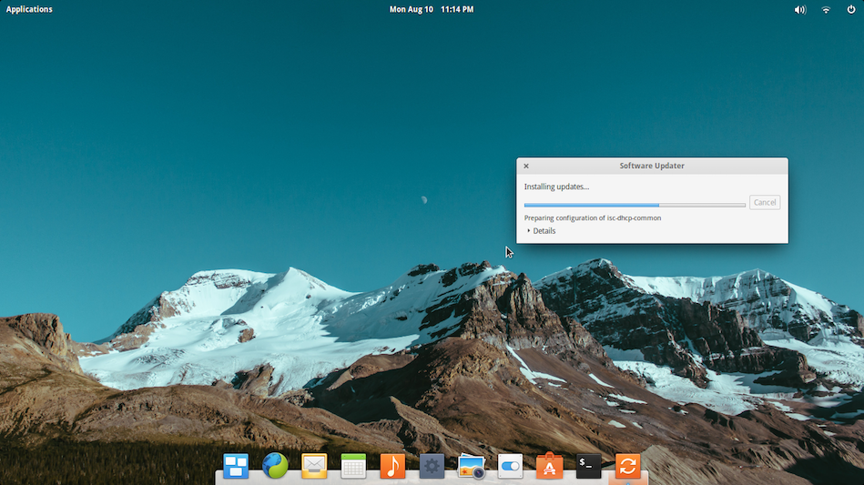

Taking the plunge into Linux (migrated blog post)
This post is migrated from my old blog.
Soooo after spending 10 over years on Windows OS, I decided to give Linux a try since I always see CS/SE students using them. BUT actually decided on this after chancing upon this really sleek looking Linux distro - elementary OS...
Initially I thought it wasn't THAT difficult:
- Go to http://elementary.io/ & download elementary os Freya (a .iso image)
- Download & Install Rufus
- Insert a flash drive (size at least 1Gb)
- Use Rufus to make it into a bootable USB drive (aka live USB) w/ the .iso file
- Shrink my current C:/ drive to make some space for Linux OS
- Shut down & boot from the bootable USB that I've just created
- Follow the steps shown in the installer
- Done!
However, loading elementary OS into my 4+ year old Toshiba Satellite-L650D turned out to be a DISASTER - wasted 2 whole days just to get it working
Some of the problems were:
- Blank screen at boot menu --> fixed w/ a BIOS update
- Kernel Panic after boot menu --> Might be caused by overheated processor (laptop too old + dying fan) but reloading the .iso into the flash drive seems to fix it.
- Blank screen w/ blinking cursor after boot menu--> .iso wasn't mounted on the flash drive properly.
- ERRNO 5 Input/Output Error during installation.
Most of the time was spent on trying to solve the "ERRNO 5 Input/Output Error" that occurred during the installation process:
- Initially thought it was due to .iso not mounted properly
- Tried all sorts of utilities to load the .iso file into my file drive
- Extremely time consuming b/c each attempt took >5mins-
- Settled w/ Rufus 2.2 (recommended by Freya's offical site)
- No luck =(
- Later suspected that my RAM was corrupted
- Had 2x 2Gb DDR3 RAM
- Tried installing w/ one removed & vice-versa
- No luck =( =(
- Googled a bit & guessed it might be due to overheating
- Adjusted a portable fan & my room's ceiling fan to face the laptop
- Switch them on & increased the fan speed to MAX
- No luck =( =( =(
- Was so close to giving up after so many tries
- Thought that the only possible cause would be: faulty sector at the end of my 750Gb hard disk (where I was trying to install Freya)
- Uninstalled lots of huge programs (Quartus, ModelSim, Visual Studio, Matlab) ~17Gb
- Shrink my C:/ drive ever further to avoid loading Linux at the end of my hard disk.
- Changed the file system type of the Linux partition from ext4 to ext3
- SUCCESS!!
 Well, at least I'm glad that all my effort paid off & I'm able to see this on my screen at the end of the day... Will update next time after I've done trying out my new OS!